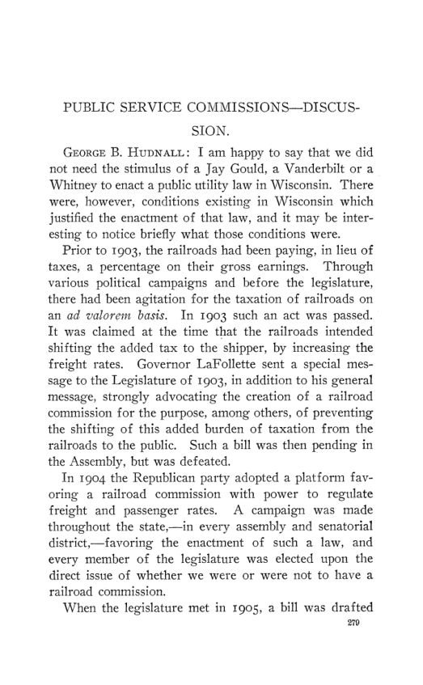

Madison, 1907: o pânico, o Tesouro e o que conta como renda
Leitura: 10 min
Madison, dezembro de 1907, semanas depois do pânico: Jenks discute o controle estatal dos negócios, Fisher nega que poupança seja renda e três autores examinam o papel do Tesouro.


Jeremiah W. Jenks abriu o discurso presidencial com um contraste de calendário. Poucos meses antes, o presidente dos Estados Unidos fora aplaudido por afirmar o poder federal de submeter empresários e corporações à lei. Poucas semanas antes, parte do mesmo público o acusava de ter causado o pânico. A crise financeira de 1907 deu o tom da vigésima reunião anual, realizada em Madison, Wisconsin, no fim de dezembro daquele ano.
Os trabalhos saíram como nº 1 do vol. 9 da terceira série, já sob o novo nome, American Economic Association Quarterly, que sucedeu as Publications. A ata da reunião e o manual da associação estão no nº 87 deste Arquivo. Aqui ficam os 19 textos do programa: o discurso de Jenks, o debate sobre poupança e renda, quatro mesas-redondas, três trabalhos sobre legislação trabalhista, uma sessão sobre o Tesouro e o mercado monetário e outra sobre as comissões de serviços públicos.
Até onde o governo deve controlar os negócios?
Jenks enunciou uma série de princípios numerados como se fossem assentados, embora soubesse que eram discutíveis. Rejeitou os direitos naturais como base de política: a única razão sólida para mudar uma política é o ganho de bem-estar. O grau de controle, disse, varia com as condições políticas, o caráter do povo e a natureza da indústria. Classificou os setores que tendem a ficar com o Estado: os ligados à própria função de governo, como correio e navios de guerra; os de importância primordial, como a cunhagem de moeda, os bancos e as escolas; e os que exigem muito capital com retorno distante. Nos demais, cabe ao governo manter a concorrência dentro de limites honestos.
Sobre o pânico, Jenks atribuiu a suspensão dos pagamentos em dinheiro menos à ação de qualquer autoridade do que à falta de controle mais rígido. Banqueiros haviam reduzido reservas para pagar dividendos altos e contado depósitos em outros bancos como recursos próprios. A conclusão foi preventiva:
“O governo precisa fazer mais para impedir que a emergência surja” (“The government must do more to prevent the emergency's arising”)
Poupança é renda?
Irving Fisher defendeu uma tese que chamou de heresia sua desde 1897: o aumento do valor do capital não é renda. O exemplo é uma floresta recém-plantada, sem corte por cerca de vinte anos, cujo valor sobe 5% ao ano à medida que se aproxima a colheita. Para Fisher, contar esse acréscimo como renda é dupla contagem, porque o valor do capital já é o desconto da renda futura. A renda corrigida pela poupança ou pela depreciação ele propôs chamar de earnings. O conceito básico, disse, ainda não tinha nome:
“O conceito não tem nome porque não é apreciado” (“The concept is unnamed because unappreciated”)
Os debatedores divergiram. Winthrop M. Daniels tratou a renda como comando líquido sobre riqueza no período, gasto ou poupado. Frank A. Fetter separou renda monetária de renda psíquica e lembrou que Fisher tirara do conceito conclusões contra a tributação da valorização da terra. Maurice H. Robinson sustentou que a equidade tributária não se deduz da definição de renda.
Como se fixa uma tarifa ferroviária razoável?
B. H. Meyer, da comissão ferroviária de Wisconsin, notou que leis e tribunais exigem tarifas razoáveis sem dizer como calculá-las. Harrison Standish Smalley propôs abandonar a ideia de tarifa justa para os dois lados: quando os interesses colidem, a tarifa razoável é a que distribui bem o ônus da injustiça. Acrescentou que os tribunais fazem do interesse da empresa a consideração decisiva. Halford Erickson descreveu como a comissão separa despesas entre serviços, terminais e transporte, e chegou a um custo por unidade bom o bastante para a prática.
Que moeda serve numa crise de liquidez?
A mesa de moeda e bancos, presidida por Davis R. Dewey, examinou o plano da comissão monetária da American Bankers' Association: notas de crédito adicionais, tributadas, vinculadas à circulação lastreada em títulos públicos. Dewey perguntou se um imposto bastaria para fazê-las voltar. William A. Scott defendeu notas emitidas contra ativos comerciais, mas por poucos emissores. Frank L. McVey achou o banco central politicamente impossível no país e preferiu câmaras de compensação com poder legal de emissão.
Que papel cabia ao Tesouro?
Três trabalhos trataram do Tesouro independente, o sistema em que o governo guarda a própria receita fora dos bancos. David Kinley o comparou a um reservatório que retira moeda sem relação com a demanda dos negócios e propôs aboli-lo, rever o orçamento e criar distritos de compensação para emitir notas de emergência. Lyman J. Gage achou ilógico que o governo patrocinasse bancos sem confiar neles, mas manteria o sistema até haver um banco central. Sua ressalva foi seca:
“dirigido por um administrador infalivelmente sábio (que ainda não apareceu)” (“directed by an infallibly wise administrator (one who has never yet appeared)”)
A. Piatt Andrew descreveu a década anterior como de intervenção crescente: iniciada com Gage, ampliada por Shaw, com depósitos públicos usados para aliviar juros e o mercado de ações. Propôs depositar automaticamente nos bancos toda receita acima de um saldo fixo, nas mesmas condições para todos. Na discussão, Scott defendeu a conduta dos secretários diante de um sistema que o Congresso não corrigira.
Quem regula os serviços públicos?
Thomas M. Osborne, membro da comissão de serviços públicos do segundo distrito de Nova York, abriu com uma cena: no mesmo dia, um empresário de Rochester saudou a nova lei como barreira contra a estatização, e um passageiro de trem a saudou como primeiro passo para ela. William H. Hatton listou os pontos em disputa: avaliação do patrimônio, contabilidade uniforme, franquias, autonomia municipal, tarifas e revisão judicial. No debate, John H. Gray defendeu franquias que reservem ao público a valorização futura; Edward W. Bemis desaconselhou a maioria dos estados a copiar o modelo tão cedo.
O que a economia diz da legislação trabalhista?
A primeira reunião anual da American Association for Labor Legislation ocorreu junto com a da associação de economistas. Richard T. Ely sustentou que nenhuma teoria de salários então aceita levava, por si, a rejeitar a legislação trabalhista. Thomas K. Urdahl examinou a jornada de oito horas nas minas de carvão e pediu investigação antes da lei. Charles R. Henderson relatou o projeto de seguro operário de Illinois, combatido pelos sindicatos, que preferiam endurecer a lei de responsabilidade civil.
O que mais entrou no programa?
Duas mesas-redondas completaram a reunião. A de economia agrícola, presidida por T. N. Carver, foi a primeira dedicada ao tema pela associação e discutiu o que a disciplina inclui e como ensiná-la. A de acordos em economia política, presidida por C. B. Fillebrown, propôs uma comissão de até doze membros para submeter definições e princípios ao voto dos associados.
Na minha leitura
Na minha leitura, o debate sobre poupança e renda é menos semântico do que parece. Fisher e seus críticos concordam com a aritmética do desconto; discordam sobre qual grandeza merece o nome de renda e, portanto, qual serve de base tributária. Se o acréscimo de valor do capital é renda, tributa-se a valorização à medida que ocorre; se não é, tributa-se apenas o que é consumido ou realizado. Robinson separou bem as duas questões: a definição analítica não decide, sozinha, o que é equitativo tributar.
A sessão do Tesouro expõe outro dilema permanente: regra ou discrição na oferta de liquidez. Kinley e Andrew querem uma regra automática, que tire do secretário a escolha de quando e onde depositar; Gage aceita a discrição enquanto não houver um banco central. Andrew acrescenta um argumento de incentivo: a expectativa de socorro externo reduz o preparo dos bancos. É o mesmo problema que Smalley e Erickson enfrentam nas tarifas, com outro vocabulário: uma norma observável, como o custo, contra a necessidade de ajustá-la caso a caso.
Glossário
- Tesouro independente
- sistema em que o governo federal guardava a própria receita em cofres e subtesourarias, fora dos bancos.
- Elasticidade da moeda
- capacidade de a oferta de moeda crescer e encolher com a demanda sazonal ou de crise.
- Notas de crédito (credit notes)
- notas bancárias adicionais, tributadas, propostas para dar elasticidade à circulação.
- Certificados de câmara de compensação
- títulos emitidos entre bancos associados para liquidar saldos sem usar dinheiro em espécie.
- Cidades de reserva
- centros onde bancos do interior podiam manter parte de suas reservas legais em depósito.
- Valor do capital
- na definição de Fisher, o valor descontado da renda futura esperada de um estoque de riqueza.
- Earnings
- termo de Fisher para a renda corrigida pelo acréscimo ou pela perda de valor do capital.
- Renda psíquica
- satisfação obtida com o uso dos bens, distinta da renda medida em dinheiro.
- Custo de reprodução
- quanto custaria construir de novo, aos preços correntes, a propriedade de uma empresa regulada.
- Franquia
- concessão pública para usar ruas e espaços públicos na prestação de um serviço, como bonde ou gás.
- Renda fundiária (ground rent)
- o que a terra vale para uso, independentemente das benfeitorias.
- Responsabilidade por culpa
- regra que obriga o empregador a indenizar apenas quando se prova sua negligência.
Artigos desta edição
- The Principles of Government Control of Business — Jeremiah W. Jenks; discurso presidencial (pp. 1–20). Jenks parte da crise de 1907 para perguntar se há princípios permanentes na relação entre governo e negócios. Enuncia-os em itens numerados, sem argumentá-los: a lei, enquanto vigora, deve reger; direitos naturais não servem de guia de política; o controle varia com as condições políticas, o caráter do povo e a natureza da indústria. Classifica setores próprios do Estado, como correio, cunhagem e escolas, e defende para os demais a concorrência dentro de limites honestos. Sobre o pânico, aponta reservas bancárias reduzidas e pede controle preventivo. Conclui que cada caso deve ser julgado pelos próprios méritos e que o governo provavelmente terá de ampliar o controle sobre as grandes empresas. JSTOR
- Are Savings Income? — Irving Fisher (pp. 21–47). Fisher responde às críticas ao livro The Nature of Capital and Income, de 1906, e reformula a questão: o aumento esperado do valor do capital é descontado do mesmo modo que os serviços do capital? Responde que não. Com exemplos de uma floresta em crescimento, de títulos e de contas de poupança, sustenta que tratar a valorização como renda é dupla contagem. Resume a tese em onze proposições: o valor do capital é o desconto de toda a renda futura, sem incluir poupança; a renda corrigida pela poupança ou pela depreciação deve chamar-se earnings; e o conceito fundamental de renda merece nome próprio. JSTOR
- Are Savings Income-Discussion — Winthrop M. Daniels, Frank A. Fetter, A. W. Flux, John Franklin Crowell e Maurice H. Robinson (pp. 48–58). Daniels define renda como comando líquido sobre riqueza no período e cita Samuel Johnson; Fetter distingue renda monetária de renda psíquica e trata o tema também como questão tributária; Flux comenta a depreciação; Crowell contrapõe renda contábil e renda em caixa; Robinson separa a definição de renda da equidade tributária e cita a definição de Hadley. JSTOR
- Agricultural Economics. Round Table Discussion: T. N. Carver, Chairman — T. N. Carver (presidente), Kenyon L. Butterfield, Edward D. Jones, R. P. Teele, F. W. Blackmar, J. G. Thompson, W. A. Peck, E. C. Parker, David Kinley, B. H. Hibbard, H. C. Taylor, W. D. Hoard e John M. Glenn (pp. 59–82). Primeira mesa da associação sobre economia agrícola. Carver remonta a Xenofonte e Aristóteles; Butterfield parte do problema rural e separa a disciplina da administração da fazenda; Teele informa que o Departamento de Agricultura não tem definição oficial; Peck descreve o estudo detalhado de fazendas; Hibbard sustenta que se trata de economia, não de agronomia; Hoard fala como fazendeiro. JSTOR
- Transportation-The Basis of Reasonable Railway Rates. Round Table Discussion: B. H. Meyer, Chairman — B. H. Meyer (presidente) (pp. 83–85). Meyer abre a mesa observando que leis e decisões exigem tarifas razoáveis sem oferecer regra tangível. Descreve o ponto de partida da comissão ferroviária de Wisconsin: cada classe de tráfego deve contribuir com sua parte da receita, e o custo do transporte deve pesar ao lado de valor, risco e espaço. JSTOR
- The Basis of Reasonable Railway Rates — Harrison Standish Smalley (pp. 86–94). Smalley concentra-se na relação entre interesse privado e público na fixação de tarifas. Contesta a máxima judicial de que as tarifas devem ser justas para ferrovias e público ao mesmo tempo: quando os interesses colidem, alguma injustiça é inevitável, e a tarifa razoável é a que distribui bem esse ônus. Distingue a regulação corretiva da regulação construtiva, voltada ao desenvolvimento social e industrial. Argumenta que os tribunais tomam o interesse da empresa como decisivo e que uma derrota judicial não prova erro da comissão. Sugere, por fim, inscrever na Constituição federal os princípios que vierem a obter consenso. JSTOR
- The Basis of Reasonable Railway Rates — Halford Erickson (pp. 95–103). Erickson contesta a ideia de que o custo por unidade de transporte não pode ser calculado ou não serve para fixar tarifas. Descreve o método da comissão de Wisconsin: separar despesas entre passageiros e carga, depois entre terminais e movimento, alocando itens comuns por unidades como carro, locomotiva ou trem por milha. Propõe que mercadorias de baixo valor paguem ao menos o custo operacional e algo mais, as médias paguem tarifas médias e as de alto valor compensem o restante. Conclui que o custo, modificado pelo valor, é o primeiro fator da tarifa. Inclui o resumo da discussão informal que se seguiu. JSTOR
- Money and Banking. Round Table Discussion: D. R. Dewey, Chairman — Davis R. Dewey (presidente), William A. Scott, Isaac A. Loos e Frank L. McVey (pp. 104–116). A mesa examina o plano monetário da American Bankers' Association. Dewey pergunta se notas de crédito tributadas, ligadas aos títulos públicos, dariam elasticidade e pede investigação antes de legislar. Scott defende notas contra ativos comerciais emitidas por poucos e mostra cidades de reserva abaixo de 25% de reservas em todos os relatórios de 1906 e 1907. Loos relata certificados de compensação usados no varejo em cidades de Iowa. McVey atribui a fragilidade ao capital bancário insuficiente, julga o banco central politicamente impossível e propõe câmaras de compensação com poder de emissão. JSTOR
- Agreements in Political Economy. Round Table Discussion: C. B. Fillebrown, Chairman — C. B. Fillebrown (presidente), T. N. Carver, Frank A. Fetter, Charles Hillman Brough e J. H. Hollander (pp. 117–123). Fillebrown apresenta o resultado de anos de consulta a economistas sobre definições de renda da terra e tributação fundiária e propõe uma comissão de até doze membros para estender o método. Carver apoia; Fetter adverte contra acordos prematuros; Brough contrasta as definições de truste do Arkansas e de Nova Jersey; Hollander defende a padronização de termos. JSTOR
- Economic Theory and Labor Legislation — Richard T. Ely (pp. 124–153). Ely fala na primeira reunião anual da American Association for Labor Legislation, realizada com a dos economistas. Lembra a declaração de princípios de 1885 e percorre a história das ideias: os fisiocratas e Smith, opostos à interferência legal, mas movidos por propósitos humanitários; a teoria do fundo de salários; Walker, Clark e Taussig, cujas teorias não excluem a legislação. Apoia-se em Mill para a proteção das crianças, mas contesta sua posição sobre o trabalho feminino, e discute o caso Lochner. Termina descrevendo a associação internacional, o escritório de Basileia e o tratado trabalhista entre França e Itália de abril de 1905. JSTOR
- The Normal Labor Day in Coal Mines — Thomas K. Urdahl (pp. 154–182). Urdahl relaciona a jornada ao estágio de desenvolvimento da indústria: minas artesanais, sujeitas à demanda de inverno, trabalham longas horas; minas capitalistas, com demanda estável, comportam jornadas curtas. Atribui a persistência da jornada longa sobretudo à falta de organização dos mineiros. Examina produção, saúde e acidentes, com dados da Inglaterra, da Áustria e da Alemanha, e nota que a maioria dos acidentes ocorre nas primeiras horas do dia. Discute se a lei de oito horas deve ser rígida ou admitir exceções. Pede investigação antes da lei e conclui que a jornada mais curta virá, por lei ou por conflito. JSTOR
- Workingman's Insurance in Illinois — Charles R. Henderson (pp. 183–198). Henderson narra as tentativas de Nova York, Maryland e Massachusetts e a resolução de 1905 que criou em Illinois uma comissão para propor seguro industrial e pensões. Reproduz o relatório: quatro sistemas possíveis, da responsabilidade por culpa ao seguro compulsório alemão e austríaco, e as falhas da lei de Illinois, com júris imprevisíveis e longos litígios. Explica a oposição sindical ao projeto, que exigia do empregador apenas metade dos prêmios. Registra que o Legislativo adotou duas recomendações: notificação de acidentes graves e nova comissão sobre doenças industriais. JSTOR
- The Relation of the United States Treasury to the Money Market — David Kinley (pp. 199–211). Kinley distingue duas funções do Tesouro independente: a fiscal, que retira e devolve moeda sem relação com a demanda dos negócios, e a de controle da oferta monetária, assumida por secretários sob pressão bancária. Liga o problema às finanças de superávit: em quarenta anos houve déficit apenas nove vezes. Propõe abolir o Tesouro independente, reconstruir o orçamento, exigir o depósito do saldo corrente em bancos nacionais e dividir o país em distritos de compensação, que aceitariam títulos aprovados e emitiriam notas tributadas, resgatáveis em moeda legal. JSTOR
- The Relation of the United States Treasury to General Finance — Lyman J. Gage, ex-secretário do Tesouro (pp. 212–217). Gage chama de ilógica a posição do Tesouro: o governo cria e fiscaliza mais de 6.500 bancos nacionais, mas não lhes confia sua receita nem aceita cheques. Afirma que depósitos nos bancos das cidades de reserva não teriam dado perda e, a 2% ao ano, teriam rendido mais de US$ 70 milhões. Ainda assim, adiaria a abolição do Tesouro independente até que o sistema bancário fosse reforçado por centralização, com um banco central ou governamental nos moldes britânico, francês ou alemão. Reconhece que o Tesouro exerceu, de forma tosca, funções de banco central. JSTOR
- The United States Treasury and the Money Market. The Partial Responsibility of Secretaries Gage and Shaw for the Crisis of 1907 — A. Piatt Andrew (pp. 218–231). Andrew reconstrói meio século de relações entre Tesouro e mercado: compras de títulos por Guthrie, Cobb e Fairchild, depósitos bancários tratados como exceção. Sustenta que, a partir de Gage, a política passou a responder aos juros e à bolsa, e que com Shaw se tornou sistemática, com depósitos concentrados em poucos bancos de Nova York. Liga esse período ao rápido aumento do crédito em relação à moeda e a reservas baixas. Propõe relações automáticas: depositar diariamente nos bancos toda receita acima de um saldo fixo, nas mesmas condições para todos. JSTOR
- The Relation of the United States Federal Treasury to the Money Market- Discussion — Edward W. Bemis, Allen R. Foote, William A. Scott e David Kinley (pp. 232–237). Bemis propõe emissão de emergência de papel-moeda contra títulos, com encargo de 7% a 10%, e Andrew responde que o encargo seria baixo demais ou chegaria tarde. Foote quer a receita depositada onde é arrecadada. Scott defende os secretários diante de um sistema não corrigido pelo Congresso; Kinley desconfia de entregar a reforma aos bancos. JSTOR
- The Public Service Commissions Law of New York State — Thomas M. Osborne, membro da comissão de serviços públicos do segundo distrito de Nova York (pp. 238–262). Osborne abre com dois elogios opostos à lei, um como barreira contra a estatização, outro como passo em sua direção. Descreve a história de desordem financeira das concessionárias nova-iorquinas e o clima da eleição estadual de 1906, que levou o governador Hughes a propor a lei. Expõe os poderes das comissões sobre tarifas, serviço e emissão de ações e títulos. Relata que as empresas aceitaram a lei e resolvem muitas queixas antes que cheguem aos comissários, e encerra apoiando-a como democrata. JSTOR
- Public Service Commissions — William H. Hatton (pp. 263–278). Hatton parte do dever do Estado de prover serviços públicos e de controlar quem exerce atividade de interesse público. Discute avaliação do patrimônio, contabilidade uniforme e publicidade, franquias, regulação estadual e autonomia municipal, tarifas e classificação, e revisão judicial. Propõe que a empresa insatisfeita processe a comissão, que nova prova em juízo devolva o caso à comissão por quinze dias e que o ônus da prova passe à empresa. Sugere dividir a jurisdição da Interstate Commerce Commission em distritos federais. JSTOR
- Public Service Commissions-Discussion — George B. Hudnall, John H. Gray, Edward W. Bemis, George E. Hooker, Allen R. Foote e M. S. Dudgeon (pp. 279–309). Hudnall narra a origem da comissão de Wisconsin de 1905. Gray defende franquias que reservem ao público a valorização futura e verbas amplas para as comissões. Bemis enumera sete objeções à difusão do modelo, entre elas a perda de autonomia municipal. Hooker trata do valor das franquias em Chicago; Foote, da estatística; Dudgeon, do recurso judicial na lei de Wisconsin. JSTOR
Fontes
- The Principles of Government Control of Business (pp. 1–20). JSTOR · Internet Archive (PDF)
- Are Savings Income? (pp. 21–47). JSTOR · Internet Archive (PDF)
- Are Savings Income-Discussion (pp. 48–58). JSTOR · Internet Archive (PDF)
- Agricultural Economics. Round Table Discussion: T. N. Carver, Chairman (pp. 59–82). JSTOR · Internet Archive (PDF)
- Transportation-The Basis of Reasonable Railway Rates. Round Table Discussion: B. H. Meyer, Chairman (pp. 83–85). JSTOR · Internet Archive (PDF)
- The Basis of Reasonable Railway Rates (pp. 86–94). JSTOR · Internet Archive (PDF)
- The Basis of Reasonable Railway Rates (pp. 95–103). JSTOR · Internet Archive (PDF)
- Money and Banking. Round Table Discussion: D. R. Dewey, Chairman (pp. 104–116). JSTOR · Internet Archive (PDF)
- Agreements in Political Economy. Round Table Discussion: C. B. Fillebrown, Chairman (pp. 117–123). JSTOR · Internet Archive (PDF)
- Economic Theory and Labor Legislation (pp. 124–153). JSTOR · Internet Archive (PDF)
- The Normal Labor Day in Coal Mines (pp. 154–182). JSTOR · Internet Archive (PDF)
- Workingman's Insurance in Illinois (pp. 183–198). JSTOR · Internet Archive (PDF)
- The Relation of the United States Treasury to the Money Market (pp. 199–211). JSTOR · Internet Archive (PDF)
- The Relation of the United States Treasury to General Finance (pp. 212–217). JSTOR · Internet Archive (PDF)
- The United States Treasury and the Money Market. The Partial Responsibility of Secretaries Gage and Shaw for the Crisis of 1907 (pp. 218–231). JSTOR · Internet Archive (PDF)
- The Relation of the United States Federal Treasury to the Money Market- Discussion (pp. 232–237). JSTOR · Internet Archive (PDF)
- The Public Service Commissions Law of New York State (pp. 238–262). JSTOR · Internet Archive (PDF)
- Public Service Commissions (pp. 263–278). JSTOR · Internet Archive (PDF)
- Public Service Commissions-Discussion (pp. 279–309). JSTOR · Internet Archive (PDF)
- Sumário da edição no JSTOR: American Economic Association Quarterly, 3ª série, vol. 9, nº 1.
Documento em domínio público (EUA, publicado antes de 1931), via JSTOR Early Journal Content e Internet Archive. Resumo e comentário do autor deste site, sem afiliação com a American Economic Association. Encontrou um erro? Escreva: a correção é publicada no próprio texto, com data.
← Nº 87 · O manual de 1908: 1.002 sócios, anuidades em queda e um boletim Nº 89 · O Economic Bulletin estreia: notas, resenhas e bibliografia →